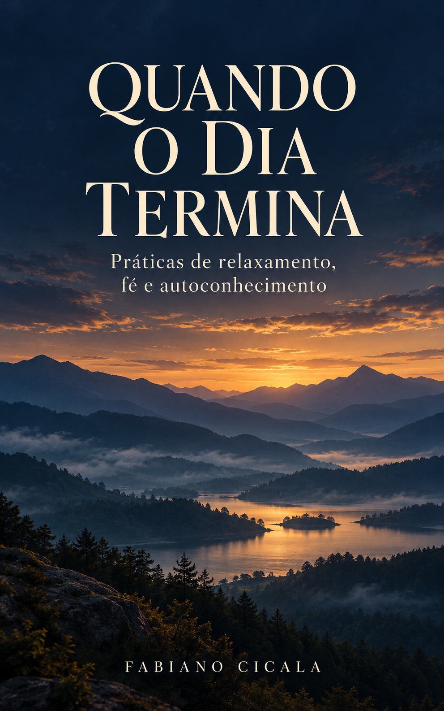

Encontrar apoio
Perceber o contato com a cama, suavizar o esforço e acompanhar a respiração sem forçá-la.
As dúvidas, o peso da responsabilidade e as conversas que você repassa em silêncio também chegam à cama. Abra um pequeno espaço entre as exigências do dia e o seu descanso.
Relaxamento, fé e autoconhecimento. Um convite ao repouso, no seu próprio ritmo.

Leia a prática antes de se acomodar. Na versão narrada, basta escutar. Não há uma forma perfeita de fazer isso.
Escolha um lugar onde possa repousar com segurança, sem dirigir ou operar equipamentos. Se algo causar desconforto, interrompa e ajuste a prática.
Uma prática curta de apoio, respiração natural e entrega.
Duração: 3min 40s. Narração sintética criada no Google AI Studio, com pausas ampliadas nesta versão de revisão. Sem música. Reprodução somente quando você apertar ouvir.
Encontre uma posição confortável. Ajuste o apoio da cabeça e deixe as mãos repousarem. Se precisar mudar de posição durante esta prática, você pode mudar. Não há uma postura a cumprir.
Talvez o trabalho tenha terminado, mas sua cabeça continue tentando resolver o dia. Reconheça esse movimento. Por alguns instantes, você pode deixar uma pergunta sem resposta.
Perceba o contato do corpo com a superfície que o recebe. Escolha um contato simples: as costas, a cabeça ou uma das mãos. Deixe um pouco do seu peso nesse apoio.
Observe a respiração como ela está. O ar entra. O ar sai. Não prenda o ar nem procure respirar mais fundo. Acompanhe apenas uma saída de ar. Depois, outra.
Suavize a testa, se isso for possível. Deixe a mandíbula encontrar uma posição confortável. Ao soltar o ar, permita que os ombros diminuam um pouco o esforço. Sem empurrá-los para baixo.
Se um pensamento aparecer, você não precisa expulsá-lo. Perceba que ele chegou e volte ao contato do corpo com o apoio. Pode voltar quantas vezes precisar.
Se a fé faz parte da sua vida, você pode oferecer este instante em uma oração silenciosa. Talvez bastem estas palavras: que eu encontre descanso para atravessar o que ainda não sei.
Você não precisa conseguir dormir agora. Pode começar permitindo o descanso possível neste momento. Deixe a próxima respiração acontecer. O apoio permanece aqui. Por enquanto, você pode repousar.
Durante cerca de três anos, Fabiano encontrou em áudios de relaxamento um apoio importante para o fim do dia. A pressão era grande: o medo de algo dar errado, a responsabilidade e uma cabeça que continuava trabalhando mesmo em casa.
Esta obra nasce do valor dessa experiência e apresenta práticas com uma nova redação. Uma condução próxima, que começa pelo apoio do corpo e oferece espaço para a dúvida, o silêncio e a fé.
“O corpo não precisa acompanhar a velocidade das máquinas para merecer descanso.”
Práticas de relaxamento, fé e autoconhecimento
Perceber o contato com a cama, suavizar o esforço e acompanhar a respiração sem forçá-la.
Reconhecer os pensamentos e retornar a um contato simples, sem transformar o descanso em outra cobrança.
Práticas de refúgio, silêncio e fé, respeitando a experiência e o ritmo de cada pessoa.
Você pode ler e depois descansar, escutar uma prática guiada ou conduzir uma leitura para outra pessoa. As reflexões de autoconhecimento ficam para um momento em que você queira permanecer desperto.
Material de bem-estar e reflexão; não substitui atendimento de saúde nem promete um resultado específico de sono.
Valores e links serão confirmados na publicação. Material de bem-estar e reflexão; não substitui atendimento de saúde.